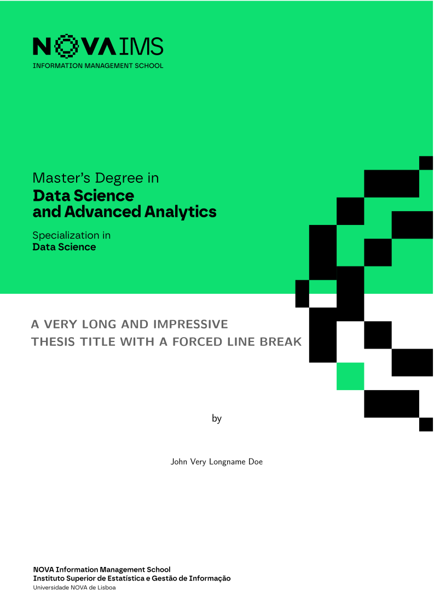

Embaixadores
Cada escola do novathesis foi construída a partir de um regulamento que alguém leu uma vez. Os regulamentos mudam, e o template só fica a saber quando alguém repara. Um embaixador é esse alguém, para uma instituição.
O que faz um embaixador
Vigiar as regras
Estar atento ao regulamento de teses e às normas de formatação da tua escola, e avisar quando mudam. Esta é a parte que mais ninguém pode fazer.
Verificar o resultado
De vez em quando, compilar o template da tua escola e confirmar que a capa, a lombada e os elementos iniciais continuam conformes ao que a instituição exige.
Reportar, ou corrigir
Abrir um issue com o que encontraste. Um pull request é bem-vindo mas nunca esperado — um relato preciso vale mais do que uma correcção à pressa.
O que não é
Não é serviço de apoio. Não se espera que respondas a dúvidas de LaTeX de outros estudantes, que mantenhas código, nem que estejas disponível a horas certas. Se a tua própria tese apertar, devolve o lugar — é uma coisa perfeitamente normal.
Assume uma escola
Escolhe a tua instituição na lista e abre um issue. Se a tua escola ainda não estiver listada, primeiro precisa de um template e só depois de um embaixador — começa por aí.
As escolas
Um lugar por repositório. Os lugares por preencher não são motivo de vergonha: o template funciona sem eles, apenas fica a saber das alterações mais devagar.
Universidade NOVA de Lisboa

 João M. Lourenço joaomlourenco
João M. Lourenço joaomlourenco João M. Lourenço joaomlourenco
João M. Lourenço joaomlourenco João M. Lourenço joaomlourenco
João M. Lourenço joaomlourenco



Universidade de Lisboa


· Porto · Minho · Lusófona · ISCTE · Politécnicos · outras


 Bruno Ferreira BrunoFerreira01
Bruno Ferreira BrunoFerreira01